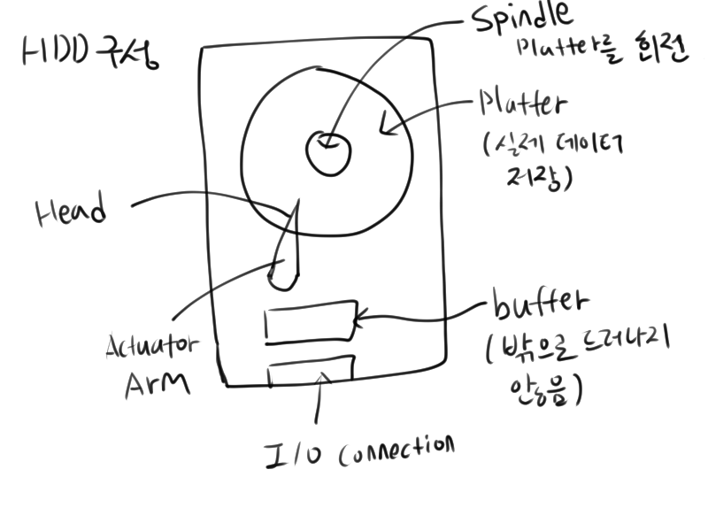
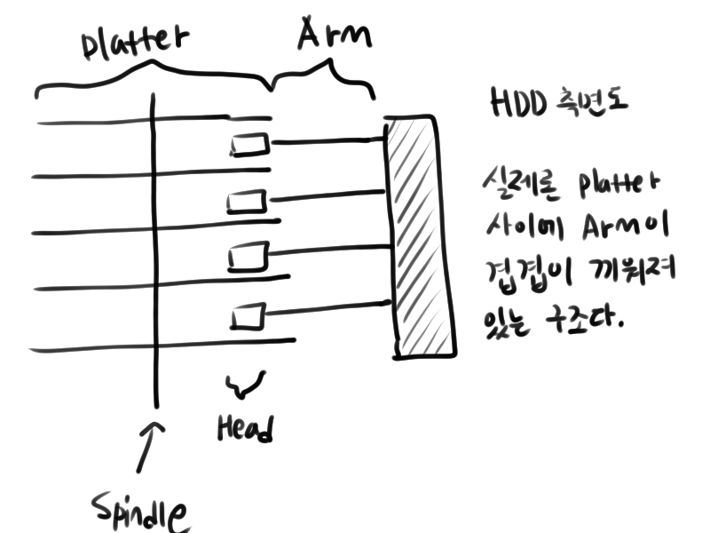
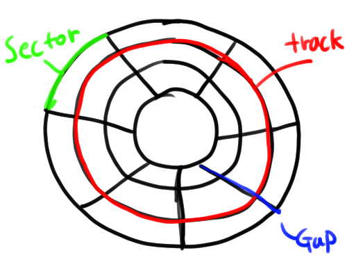
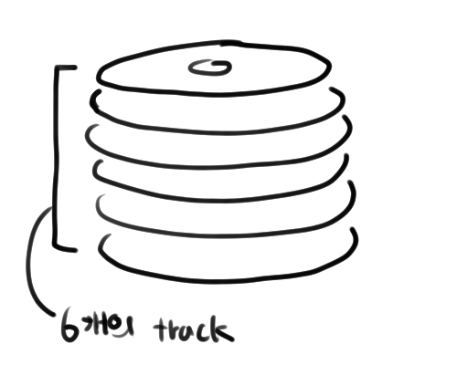

대표적인 Secondary storage인 HDD에 대해 알아보겠습니다.
하드디스크의 구성

[그림이 허접해서 미안합니다…]
- platter: 실제 데이터가 저장되는 원판입니다. 자기적 특성을 이용해 데이터를 저장합니다. 이러한 원판이 여러 겹으로 쌓여있습니다.
- spindle: 원판을 회전시키는 모터입니다.
- head: platter 위에 접촉해 데이터를 읽어 들입니다.
- arm: 헤드를 데이터가 있는 위치로 이동시키는 역할을 합니다.
- buffer: 하드 겉으로 드러나지는 않지만, 내부에 존재합니다. Head가 읽은 정보를 임시로 저장하는 역할을 합니다.
- IO connection: 데이터가 나가고 들어오는 입구입니다.

하드디스크를 옆에서 보면 이런 구조가 됩니다. 여러 장의 platter들 사이사이에 head가 끼워져 있는 형태가 됩니다.

하나의 플레터는 여러 개의 트랙으로 구성되어 있고 각 트랙은 여러 개의 sector로 이루어집니다. 그리고 이 sector는 gap으로 구분됩니다.

실제 하드디스크는 여러 장의 플레터가 겹겹이 쌓여있는 구조입니다. 한 하드가 6개의 플레터로 구성되어 있다고 한다면, 지름이 같은 track들이 6개 존재할 것입니다. 이 지름이 같은 track들을 묶어서 cylinder라고 합니다. 즉 한 하드에는 한 플레터에 존재하는 track의 수 만큼 cylinder가 존재합니다. cylinder는 논리적 단위입니다.
그렇다면 한 하드디스크가 다음과 같은 특성을 가진다고 합시다.
- 한 섹터 당 512byte 저장
- 한 트랙당 63 섹터로 구성
- 한 실린더는 16개 트랙으로 구성
- 실린더는 총 4092개
이때 이 하드디스크의 총 용량은 512 * 63 * 16 * 4092byte, 약 정도 됩니다.
그렇다면 256byte 크기의 레코드 50,000개로 이루어진 파일을 저장한다고 하면 몇개의 실린더가 사용될까요?
파일의 크기 : 50000 * 256byte
한 실린더의 크기: 512 * 63 * 16byte
약 24.8개의 실린더가 필요하다는 결론이 나옵니다. 실제론 데이터가 이렇게 연달아 저장되는 것이 아닌 여러 실린더에 분산되어 저장되므로 그 이상의 실린더가 필요합니다.
sector, cluster, extent
sector
섹터에 대해 조금 더 알아봅시다.
섹터는 주소를 알 수 있는 최소 단위 입니다. 또한 모든 섹터의 크기는 같습니다.
HDD는 index file을 만들어 주소를 참조하여 데이터를 찾기 때문에 한 섹터 당 하나의 레코드를 저장한다면 시간적으론 굉장히 효율적인 데이터 접근이 가능합니다. 하지만 낭비되는 공간이 많아지겠죠. 한 섹터에 여러 레코드가 들어갈 수 있게 한다면 공간은 더 효율적으로 쓰게 되지만, 데이터 접근에 걸리는 시간이 길어집니다.
cluster
클러스터는 FAT file system에서 사용하는 논리적 단위로 한 파일을 저장할 때 사용되는 가장 작은 단위 입니다. 1 file = 10 cluster처럼 말이죠. OS는 HDD를 클러스터 단위로 읽습니다. 하나의 클러스터는 여러 개의 섹터로 구성됩니다. 또한 이 섹터들은 물리적으로 연속될 필요는 없습니다.
한 클러스터의 크기가 커지면 그만큼 비어있는 섹터도 많아지기 때문에 메모리 단편화(비어있지만 사용하지 못하는 메모리들 때문에 데이터를 더 저장하지 못하는 상황을 불러올 수 있습니다.
FAT file system의 FAT는 File Allocation Table의 약자입니다. 이전 장에서 배운 HDD는 index file을 쓴다고 했습니다. FAT는 파일들을 클러스터별로 구분하여 어느 파일이 어떤 클러스터를 쓰는지, 각 클러스터의 주소는 어떻게 되는지 저장하여 사용합니다.
Extents
한 파일을 저장하기 위해 사용 중인 연속된 클러스터들의 수입니다. 파일을 저장할 때 꼭 연속된 클러스터만 사용하는 것은 아닙니다. 만약 연속된 클러스터 3개가 한 파일을 저장한다면 extent는 1이지만, 떨어져 있는 클러스터 하나와 붙어있는 클러스터 2개를 사용해 저장한다면 extents는 2입니다.
Disk Access Cost
하드디스크가 disk access 할 땐 3가지 동작으로 이루어지고 각 동작에서 cost가 발생합니다.
- head를 알맞은 cylinder의 위치로 옮길 때 드는 시간(seek time)
- 알맞은 sector에 head가 위치하도록 platter를 회전시키는 시간(rotational delay)
- 데이터를 읽어 들이는 시간(transfer time)
seek time
최악의 경우 맨 안쪽 실린더에서 맨 바깥 쪽 실린더로 arm을 이동시켜야 하므로 cylinder의 수 만큼 시간이 걸리겠지만, 평균적으로 1/3만큼의 시간이 걸린다고 여깁니다.
Rotational Delay
알맞은 sector에 head가 위치하도록 platter를 회전시키는 데 드는 시간입니다. 이 delay는 하드디스크의 회전속도에 따라 결정됩니다. 한 하드디스크가 5,000rpm이라면 한 번 회전하는 데 12ms가 걸립니다. (역수)
rotational delay는 평균적으로 한 바퀴 회전하는 데 드는 시간의 1/2만큼이라고 여깁니다.
transfer time
데이터를 head가 읽어 들이는데 걸리는 시간은 다음과 같은 공식으로 구합니다.
transfer time = (읽어 들일 byte 수) / (트랙당 byte 수) * (한 바퀴 회전하는 데 드는 시간)
위 공식은
(트랙 사이즈):(회전 시간) = (데이터 사이즈):(데이터를 읽는 데 드는 시간)
에서 유도됩니다.
하드디스크 스펙 표에서 성능 추측하기
| 스펙 | 값 |
|---|---|
| Average seek time | 8ms |
| Spindle speed | 10000rpm |
| Average rotational delay | 3ms |
| Bytes per sector | 512 |
| Sectors per track | 170 |
한 하드웨어가 위와 같은 스펙을 가진다고 하면 이 하드디스크가 1byte를 Input/Output에 걸리는 속도는 8ms(seek time) + 3ms(rotational delay) + 1/(512 * 170) * 6ms 가 됩니다.